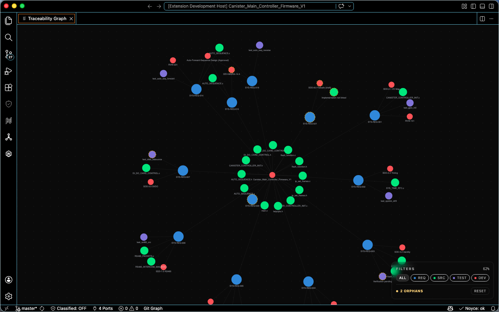

<!doctype html>
<html lang="en">
<head>
  <meta charset="UTF-8" />
  <meta name="viewport" content="width=device-width, initial-scale=1.0" />
  <meta name="theme-color" content="#000000" />
  <meta name="description" content="Noyce IDE is an AI-native, Code-OSS workbench for safety-critical embedded firmware. DO-178C, ISO 26262, and MISRA evidence is built in." />
  <meta property="og:type" content="website" />
  <meta property="og:title" content="Noyce IDE — Build it right." />
  <meta property="og:description" content="The AI-native IDE for safety-critical embedded engineering. Certification evidence, multi-agent review, and pin-aware editing in one workbench." />
  <meta property="og:image" content="icons_resources/icon_large.png" />
  <meta name="twitter:card" content="summary_large_image" />
  <title>Noyce IDE — Build it right.</title>

  <link rel="icon" type="image/png" sizes="512x512" href="icons_resources/icon_large.png" />
  <link rel="icon" type="image/png" sizes="32x32" href="icons_resources/icon_large.png" />
  <link rel="shortcut icon" type="image/png" href="icons_resources/icon_large.png" />
  <link rel="apple-touch-icon" sizes="180x180" href="icons_resources/icon_large.png" />

  <script src="https://unpkg.com/react@18.3.1/umd/react.development.js" integrity="sha384-hD6/rw4ppMLGNu3tX5cjIb+uRZ7UkRJ6BPkLpg4hAu/6onKUg4lLsHAs9EBPT82L" crossorigin="anonymous"></script>
  <script src="https://unpkg.com/react-dom@18.3.1/umd/react-dom.development.js" integrity="sha384-u6aeetuaXnQ38mYT8rp6sbXaQe3NL9t+IBXmnYxwkUI2Hw4bsp2Wvmx4yRQF1uAm" crossorigin="anonymous"></script>
  <script src="https://unpkg.com/@babel/standalone@7.29.0/babel.min.js" integrity="sha384-m08KidiNqLdpJqLq95G/LEi8Qvjl/xUYll3QILypMoQ65QorJ9Lvtp2RXYGBFj1y" crossorigin="anonymous"></script>
  <script src="https://cdn.tailwindcss.com"></script>
  <script src="https://unpkg.com/lucide@latest"></script>
  <style>
    @import url('https://fonts.googleapis.com/css2?family=Instrument+Serif:ital@0;1&display=swap');

    body { background-color: #000; color: #fff; margin: 0; font-family: ui-sans-serif, system-ui, sans-serif; }
    .font-instrument { font-family: 'Instrument Serif', serif; }
    .mono { font-family: ui-monospace, 'JetBrains Mono', 'SF Mono', monospace; }

    .liquid-glass {
      background: rgba(255, 255, 255, 0.01);
      background-blend-mode: luminosity;
      backdrop-filter: blur(4px);
      -webkit-backdrop-filter: blur(4px);
      border: none;
      box-shadow: inset 0 1px 1px rgba(255, 255, 255, 0.1);
      position: relative;
      overflow: hidden;
    }
    .liquid-glass::before {
      content: '';
      position: absolute;
      inset: 0;
      border-radius: inherit;
      padding: 1.4px;
      background: linear-gradient(180deg, rgba(255,255,255,0.45) 0%, rgba(255,255,255,0.15) 20%, rgba(255,255,255,0) 40%, rgba(255,255,255,0) 60%, rgba(255,255,255,0.15) 80%, rgba(255,255,255,0.45) 100%);
      -webkit-mask: linear-gradient(#fff 0 0) content-box, linear-gradient(#fff 0 0);
      -webkit-mask-composite: xor;
      mask-composite: exclude;
      pointer-events: none;
    }
    .caret { display:inline-block; width:8px; height:1em; background:#7dd3fc; margin-left:2px; vertical-align:-2px; animation: blink 1s steps(1) infinite; }
    @keyframes blink { 50% { opacity: 0; } }
  </style>
</head>
<body>
  <div id="root"></div>
  <script type="text/babel">
    const { useState, useEffect, useRef } = React;
    const EASE = 'cubic-bezier(.16,1,.3,1)';
    const REDUCE = typeof window !== 'undefined' && window.matchMedia('(prefers-reduced-motion: reduce)').matches;

    /* ---------- Reveal-on-scroll (framer-motion useInView equivalent) ---------- */
    function useInView(margin) {
      const ref = useRef(null);
      const [shown, setShown] = useState(false);
      useEffect(() => {
        const el = ref.current; if (!el) return;
        if (REDUCE) { setShown(true); return; }
        const io = new IntersectionObserver(([e]) => {
          if (e.isIntersecting) { setShown(true); io.disconnect(); }
        }, { rootMargin: (margin || '-100px') + ' 0px', threshold: 0.02 });
        io.observe(el);
        return () => io.disconnect();
      }, []);
      return [ref, shown];
    }
    function Reveal({ children, y = 40, x = 0, delay = 0, dur = 0.8, className, style, as }) {
      const [ref, shown] = useInView();
      const Tag = as || 'div';
      return (
        <Tag ref={ref} className={className}
          style={{
            opacity: shown ? 1 : 0,
            transform: shown ? 'none' : `translate(${x}px, ${y}px)`,
            transition: `opacity ${dur}s ${EASE} ${delay}s, transform ${dur}s ${EASE} ${delay}s`,
            willChange: 'opacity, transform',
            ...style,
          }}>{children}</Tag>
      );
    }

    /* ---------- Hero background video (seamless crossfade loop) ---------- */
    const HeroVideo = () => {
      const videoRef = useRef(null);
      const fadeRef = useRef(null);
      const fadingOutRef = useRef(false);
      useEffect(() => {
        const video = videoRef.current; if (!video) return;
        const startFade = (target, duration, cb) => {
          if (fadeRef.current) cancelAnimationFrame(fadeRef.current);
          const start = parseFloat(video.style.opacity) || 0;
          const t0 = performance.now();
          const step = (now) => {
            const p = Math.min((now - t0) / duration, 1);
            video.style.opacity = start + (target - start) * p;
            if (p < 1) fadeRef.current = requestAnimationFrame(step); else if (cb) cb();
          };
          fadeRef.current = requestAnimationFrame(step);
        };
        const onCanPlay = () => { video.play().catch(() => {}); startFade(1, 500); };
        const onTime = () => {
          if (video.duration - video.currentTime <= 0.55 && !fadingOutRef.current) {
            fadingOutRef.current = true; startFade(0, 500);
          }
        };
        const onEnded = () => {
          video.style.opacity = '0';
          setTimeout(() => { video.currentTime = 0; video.play().catch(() => {}); fadingOutRef.current = false; startFade(1, 500); }, 100);
        };
        video.addEventListener('canplay', onCanPlay);
        video.addEventListener('timeupdate', onTime);
        video.addEventListener('ended', onEnded);
        if (video.readyState >= 3) onCanPlay();
        return () => {
          video.removeEventListener('canplay', onCanPlay);
          video.removeEventListener('timeupdate', onTime);
          video.removeEventListener('ended', onEnded);
          if (fadeRef.current) cancelAnimationFrame(fadeRef.current);
        };
      }, []);
      return (
        <div className="absolute inset-0 z-0 overflow-hidden bg-black pointer-events-none">
          <video ref={videoRef} src="web-Prototype/assets/hero.mp4" className="absolute inset-0 w-full h-full object-cover object-bottom" muted autoPlay playsInline preload="auto" style={{ opacity: 0 }} />
          <div className="absolute inset-0 bg-gradient-to-b from-black/50 via-black/20 to-black/95 pointer-events-none"></div>
        </div>
      );
    };

    /* ---------- Navbar ---------- */
    const Navbar = () => (
      <nav className="relative z-20 px-6 py-6 w-full">
        <div className="liquid-glass rounded-full px-6 py-3 flex items-center justify-between max-w-5xl mx-auto">
          <div className="flex items-center gap-8">
            <a href="#top" className="flex items-center gap-2">
              
            </a>
            <div className="hidden md:flex items-center gap-6">
              <a href="#features" className="text-white/80 hover:text-white transition-colors text-sm font-medium">Features</a>
              <a href="#hardware" className="text-white/80 hover:text-white transition-colors text-sm font-medium">Hardware</a>
              <a href="#ai" className="text-white/80 hover:text-white transition-colors text-sm font-medium">AI Agents</a>
              <a href="#compliance" className="text-white/80 hover:text-white transition-colors text-sm font-medium">Compliance</a>
            </div>
          </div>
          <div className="flex items-center gap-4">
            <a href="https://github.com/Hitheshkaranth/noyce_ide" className="text-white hover:text-white/80 transition-colors text-sm font-medium hidden sm:block">View on GitHub</a>
            <a href="#download" className="liquid-glass rounded-full px-6 py-2 text-white text-sm font-medium hover:bg-white/5 transition-colors">Download</a>
          </div>
        </div>
      </nav>
    );

    /* ---------- SECTION 1 · Hero ---------- */
    const Hero = () => {
      const stats = [['10+', 'First-party extensions'], ['6', 'AI personas, one orchestrator'], ['6', 'MCU families, pin-aware'], ['A', 'DO-178C Level A ready']];
      return (
        <section id="top" className="relative min-h-screen overflow-hidden flex flex-col">
          <HeroVideo />
          <Navbar />
          <div className="relative z-10 flex-1 flex flex-col items-center justify-center px-6 py-12 text-center -translate-y-[8%]">
            <span className="mono text-xs tracking-[0.25em] uppercase text-white/50 mb-6">Noyce IDE · v1.0.7</span>
            <h1 className="font-instrument text-6xl md:text-7xl lg:text-8xl xl:text-9xl text-white mb-8 tracking-tight drop-shadow-lg">
              Build it <em className="italic">right</em>.
            </h1>
            <p className="text-lg md:text-xl text-white/80 mb-3 max-w-2xl font-light">The AI-native IDE for safety-critical embedded engineering.</p>
            <p className="text-sm text-white/50 mb-10 max-w-xl mx-auto leading-relaxed px-4">
              A Code-OSS workbench where certification evidence, multi-agent review, and pin-aware editing live in one place.
            </p>
            <div className="flex flex-wrap items-center justify-center gap-4 mb-14">
              <a href="https://github.com/Hitheshkaranth/noyce_ide/releases/latest/download/Noyce_macOS_aarch64.dmg" className="bg-white text-black pl-6 pr-2 py-2 rounded-full font-medium hover:bg-white/90 transition-colors flex items-center gap-3">
                Download for macOS <span className="bg-black text-white rounded-full p-2.5 flex"><i data-lucide="arrow-right" className="w-4 h-4"></i></span>
              </a>
              <a href="https://github.com/Hitheshkaranth/noyce_ide" className="liquid-glass rounded-full px-8 py-3 text-white text-sm font-medium hover:bg-white/5 transition-colors flex items-center gap-2">
                <i data-lucide="github" className="w-4 h-4"></i> View on GitHub
              </a>
            </div>
            <div className="grid grid-cols-2 md:grid-cols-4 gap-x-10 gap-y-6 max-w-2xl">
              {stats.map(([n, l], i) => (
                <div key={i} className="text-center">
                  <div className="font-instrument text-4xl md:text-5xl text-white">{n}</div>
                  <div className="text-white/50 text-xs mt-1">{l}</div>
                </div>
              ))}
            </div>
          </div>
          <div className="relative z-10 flex justify-center gap-4 pb-12">
            {[['github', 'https://github.com/Hitheshkaranth/noyce_ide'], ['book-open', 'https://github.com/Hitheshkaranth/noyce_ide#readme'], ['globe', 'https://hitheshkaranth.github.io/noyce-ide-dist/']].map(([ico, href], i) => (
              <a key={i} href={href} className="liquid-glass rounded-full p-4 text-white/80 hover:text-white hover:bg-white/5 transition-all">
                <i data-lucide={ico} className="w-5 h-5"></i>
              </a>
            ))}
          </div>
        </section>
      );
    };

    /* ---------- SECTION 2 · About ---------- */
    const About = () => (
      <section className="relative bg-black pt-32 md:pt-44 pb-10 md:pb-14 px-6 overflow-hidden">
        <div className="absolute inset-0 bg-[radial-gradient(ellipse_at_top,_rgba(255,255,255,0.03)_0%,_transparent_70%)] pointer-events-none"></div>
        <div className="relative max-w-6xl mx-auto">
          <Reveal y={20} dur={0.6}><span className="text-white/40 text-sm tracking-[0.25em] uppercase">About Noyce</span></Reveal>
          <Reveal y={40} delay={0.1} dur={0.8}>
            <h2 className="font-instrument text-4xl md:text-6xl lg:text-7xl text-white leading-[1.1] tracking-tight mt-6">
              Building the IDE for firmware <span className="italic text-white/60">that has to be right</span> —<br className="hidden md:block" />
              <span className="italic text-white/60"> code, evidence, and silicon, finally on the same desk.</span>
            </h2>
          </Reveal>
        </div>
      </section>
    );

    /* ---------- SECTION 3 · Featured video ---------- */
    const Featured = () => (
      <section className="bg-black pt-6 md:pt-10 pb-20 md:pb-32 px-6 overflow-hidden">
        <div className="max-w-6xl mx-auto">
          <Reveal y={60} dur={0.9} className="relative rounded-3xl overflow-hidden aspect-video liquid-glass">
            <video src="web-Prototype/assets/featured.mp4" className="w-full h-full object-cover" muted autoPlay loop playsInline preload="auto" />
            <div className="absolute inset-0 bg-gradient-to-t from-black/70 via-transparent to-transparent pointer-events-none"></div>
            <div className="absolute bottom-0 left-0 right-0 p-6 md:p-10 flex flex-col md:flex-row md:items-end md:justify-between gap-6">
              <div className="liquid-glass rounded-2xl p-6 md:p-8 max-w-md">
                <div className="text-white/50 text-xs tracking-[0.25em] uppercase mb-3">Our Approach</div>
                <p className="text-white text-sm md:text-base leading-relaxed">
                  Safety-critical firmware deserves better than five disconnected tools. Noyce brings requirements,
                  traceability, MISRA, and on-target debug into one Code-OSS workbench — evidence surfaced beside the code it governs.
                </p>
              </div>
              <a href="#features" className="liquid-glass rounded-full px-8 py-3 text-white text-sm font-medium hover:bg-white/5 transition-colors self-start md:self-auto">Explore features</a>
            </div>
          </Reveal>
        </div>
      </section>
    );

    /* ---------- SECTION 4 · Features (Noyce Core) ---------- */
    const Features = () => {
      const features = [
        { icon: 'shield-check', title: 'Evidence in the editor', desc: 'DO-178C Table A objectives, ISO 26262 work products, MISRA C:2012 advisories, and MC/DC coverage — surfaced inline alongside the code they govern.' },
        { icon: 'activity', title: 'Static analysis, rule-decoded', desc: 'Real-time MISRA C:2012 and CERT C diagnostics with rule citations and one-click agent auto-fix, right inside your editor.' },
        { icon: 'cpu', title: 'Aware of the silicon', desc: 'Pin mux, SVD-driven peripheral registers, an RTOS task viewer, a Cortex-M fault decoder, and linker memory maps — wired into the workbench.' },
        { icon: 'git-branch', title: 'Traceability kept honest', desc: 'REQ → Design → Code → Test threaded continuously by a Rust sidecar that re-indexes on save and fails the build on orphaned requirements.' },
        { icon: 'git-merge', title: 'Embedded CI/CD', desc: 'Signed builds, lint, tests, and release evidence, with hardware-in-the-loop testing and flashing integrated into the pipeline.' },
        { icon: 'bot', title: 'A team, not a chatbot', desc: 'Six specialist personas orchestrated against the safety case — bring your own provider or run fully on-prem through Ollama or LM Studio.' },
      ];
      return (
        <section id="features" className="bg-black py-24 md:py-32 px-6 overflow-hidden">
          <div className="max-w-6xl mx-auto">
            <Reveal y={30} dur={0.7} className="flex flex-col md:flex-row md:items-end md:justify-between mb-14 gap-4">
              <div>
                <span className="text-white/40 text-sm tracking-[0.25em] uppercase">Noyce Core</span>
                <h2 className="font-instrument text-4xl md:text-6xl text-white tracking-tight mt-3">Code, evidence, and silicon<br className="hidden md:block" /> on the same desk.</h2>
              </div>
              <p className="text-white/50 text-sm max-w-sm">Noyce extends the Code-OSS shell you trust with first-class surfaces for requirements, traceability, MISRA, pin config, and on-target debug.</p>
            </Reveal>
            <div className="grid grid-cols-1 md:grid-cols-2 lg:grid-cols-3 gap-6">
              {features.map((f, i) => (
                <Reveal key={i} y={50} delay={(i % 3) * 0.1} dur={0.8} className="liquid-glass p-6 rounded-2xl flex flex-col gap-4 hover:bg-white/[0.02] transition-colors">
                  <div className="text-white/90"><i data-lucide={f.icon} className="w-6 h-6"></i></div>
                  <div>
                    <h3 className="text-lg font-semibold text-white mb-2">{f.title}</h3>
                    <p className="text-white/60 text-sm leading-relaxed">{f.desc}</p>
                  </div>
                </Reveal>
              ))}
            </div>
          </div>
        </section>
      );
    };

    /* ---------- SECTION 5 · AI Agents ---------- */
    const AGENTS = [
      { name: 'System Designer', role: 'decompose', ico: 'compass', body: 'Takes a high-level requirement — "the brake actuator shall respond within 50 ms under ASIL-D conditions" — and emits low-level design items, interfaces, and traceability stubs.', cmd: 'noyce decompose REQ-014 --target stm32h7' },
      { name: 'Software Engineer', role: 'implement', ico: 'code', body: 'Drafts the implementation with the SVD and HAL in context — fixed-point aware, ISR-safe, and wired to the deviation register from the first line.', cmd: 'noyce impl LLR-072 --hal stm32h7 --misra' },
      { name: 'Test Engineer', role: 'prove', ico: 'flask-conical', body: 'Generates MC/DC harnesses, fault-injection scenarios, and hardware-in-the-loop scripts, then ties each verification artifact back to the originating requirement.', cmd: 'noyce verify TST-204 --mcdc --hil' },
      { name: 'Code Reviewer', role: 'scrutinise', ico: 'search-check', body: 'Pushes back against MISRA C, fixed-point arithmetic, ISR safety, and the project deviation register — every comment cites a rule, not an opinion.', cmd: 'noyce review --rule R.11.5 --explain' },
      { name: 'Doc Generator', role: 'capture', ico: 'file-text', body: 'Writes the SDP, SDD, SVP, and review minutes from the live workspace — section numbers, deviations, and signatures stay linked, not reconstructed from memory.', cmd: 'noyce doc SDP --section 4.2 --sign' },
      { name: 'Traceability Monitor', role: 'stitch', ico: 'git-fork', body: 'Maintains the REQ → Design → Code → Test thread continuously, breaks the build when a requirement loses a downstream artifact, and records every link in the audit log.', cmd: 'noyce trace --audit --fail-on-orphan' },
    ];
    const Agents = () => {
      const [active, setActive] = useState(0);
      const [typed, setTyped] = useState('');
      const a = AGENTS[active];
      useEffect(() => {
        setTyped(''); if (REDUCE) { setTyped(a.cmd); return; }
        let i = 0; const id = setInterval(() => { i++; setTyped(a.cmd.slice(0, i)); if (i >= a.cmd.length) clearInterval(id); }, 26);
        return () => clearInterval(id);
      }, [active]);
      return (
        <section id="ai" className="bg-black py-24 md:py-32 px-6 border-t border-white/5 overflow-hidden">
          <div className="max-w-6xl mx-auto">
            <Reveal y={30} dur={0.7} className="text-center mb-14">
              <span className="text-white/40 text-sm tracking-[0.25em] uppercase">Noyce Agents</span>
              <h2 className="font-instrument text-4xl md:text-6xl text-white tracking-tight mt-3 mb-4">Six specialist agents,<br className="hidden md:block" /> one auditable thread.</h2>
              <p className="text-white/50 max-w-2xl mx-auto text-sm">Bring your own provider — Anthropic, OpenAI, Google Gemini, or Mistral — or run fully on-prem. The orchestrator routes by latency, cost, and confidence, and signs every action against the requirements graph.</p>
            </Reveal>
            <div className="grid grid-cols-1 lg:grid-cols-5 gap-6 items-start">
              <div className="lg:col-span-2 flex flex-col gap-2">
                {AGENTS.map((ag, i) => (
                  <button key={ag.name} onClick={() => setActive(i)} onMouseEnter={() => setActive(i)}
                    className={'liquid-glass rounded-xl px-5 py-4 flex items-center gap-4 text-left transition-colors ' + (active === i ? 'bg-white/[0.04]' : 'hover:bg-white/[0.02]')}>
                    <span className={'w-9 h-9 rounded-lg grid place-items-center shrink-0 ' + (active === i ? 'text-sky-300 bg-sky-300/10' : 'text-white/70')}><i data-lucide={ag.ico} className="w-5 h-5"></i></span>
                    <span><span className="block text-sm font-semibold text-white">{ag.name}</span><span className="block text-xs text-white/40">{ag.role}</span></span>
                  </button>
                ))}
              </div>
              <div className="lg:col-span-3 liquid-glass rounded-2xl p-8">
                <div className="flex items-center gap-4 mb-5">
                  <span className="w-12 h-12 rounded-xl grid place-items-center bg-sky-300/10 text-sky-300"><i data-lucide={a.ico} className="w-6 h-6"></i></span>
                  <div><h3 className="text-xl font-semibold text-white">{a.name}</h3><div className="text-xs text-white/40 uppercase tracking-wider">{a.role}</div></div>
                </div>
                <p className="text-white/70 leading-relaxed mb-6">{a.body}</p>
                <div className="mono text-sm text-sky-300 bg-black/50 border border-white/10 rounded-lg px-4 py-3"><span className="text-white/40">$ </span>{typed}<span className="caret"></span></div>
              </div>
            </div>
          </div>
        </section>
      );
    };

    /* ---------- SECTION 6 · Hardware × Software (philosophy layout) ---------- */
    const Philosophy = () => (
      <section id="hardware" className="bg-black py-28 md:py-40 px-6 overflow-hidden">
        <div className="max-w-6xl mx-auto">
          <Reveal y={40} dur={0.8}>
            <h2 className="font-instrument text-5xl md:text-7xl lg:text-8xl text-white tracking-tight mb-16 md:mb-24">Silicon <span className="italic text-white/40">×</span> Software.</h2>
          </Reveal>
          <div className="grid grid-cols-1 md:grid-cols-2 gap-8 md:gap-12">
            <Reveal x={-40} y={0} dur={0.9} className="rounded-3xl overflow-hidden aspect-[4/3] liquid-glass">
              <video src="web-Prototype/assets/philosophy.mp4" className="w-full h-full object-cover" muted autoPlay loop playsInline preload="auto" />
            </Reveal>
            <Reveal x={40} y={0} dur={0.9}>
              <div className="text-white/40 text-xs tracking-[0.25em] uppercase mb-4">Aware of the silicon</div>
              <p className="text-white/70 text-base md:text-lg leading-relaxed">Pin mux, SVD-driven peripheral registers, an RTOS task viewer, and a Cortex-M fault decoder — wired into the workbench, next to the code that drives them. First-class support for STM32, TI Tiva, PIC32, RP2040, i.MX RT, and generic Cortex-M.</p>
              <div className="w-full h-px bg-white/10 my-8"></div>
              <div className="text-white/40 text-xs tracking-[0.25em] uppercase mb-4">Traceability kept honest</div>
              <p className="text-white/70 text-base md:text-lg leading-relaxed">REQ → Design → Code → Test, threaded by a Rust sidecar that re-indexes on save and fails the build on orphaned requirements. Built from the actual workspace, not a side spreadsheet.</p>
              <div className="flex flex-wrap gap-2 mt-8">
                {['STM32', 'TI Tiva', 'PIC32', 'RP2040', 'i.MX RT', 'Cortex-M'].map((t) => (
                  <span key={t} className="mono text-xs text-sky-300/90 border border-sky-300/20 bg-sky-300/[0.04] rounded-full px-3 py-1">{t}</span>
                ))}
              </div>
            </Reveal>
          </div>
        </div>
      </section>
    );

    /* ---------- SECTION 7 · Compliance / Traceability metrics ---------- */
    const Compliance = () => {
      const metrics = [['1,284', 'live REQ, Design, and Test links'], ['412 ms', 'sidecar full-workspace re-index'], ['0', 'orphan requirements before merge'], ['SHA', 'cryptographic audit log per change']];
      return (
        <section id="compliance" className="bg-black py-24 md:py-32 px-6 border-t border-white/5 overflow-hidden">
          <div className="max-w-5xl mx-auto text-center">
            <Reveal y={30} dur={0.7}>
              <span className="text-white/40 text-sm tracking-[0.25em] uppercase">Traceability</span>
              <h2 className="font-instrument text-4xl md:text-6xl text-white tracking-tight mt-3 mb-4">REQ → Design → Test, kept honest.</h2>
              <p className="text-white/50 max-w-2xl mx-auto text-sm mb-12">The Rust sidecar re-indexes on save, the orchestrator audits the thread, and broken links fail the build.</p>
            </Reveal>
            <Reveal y={50} dur={0.9} className="liquid-glass rounded-2xl p-3 mb-12">
              <div className="rounded-xl overflow-hidden border border-white/10 bg-black/50">
                
              </div>
            </Reveal>
            <div className="grid grid-cols-2 md:grid-cols-4 gap-4">
              {metrics.map(([n, l], i) => (
                <Reveal key={i} y={40} delay={i * 0.08} dur={0.7} className="liquid-glass rounded-xl p-5">
                  <div className="font-instrument text-3xl md:text-4xl text-white">{n}</div>
                  <div className="text-white/50 text-xs mt-1 leading-snug">{l}</div>
                </Reveal>
              ))}
            </div>
          </div>
        </section>
      );
    };

    /* ---------- SECTION 8 · What we do (services cards) ---------- */
    const Services = () => {
      const cards = [
        { video: 'web-Prototype/assets/strategy.mp4', tag: 'Compliance', title: 'Evidence & Certification', desc: 'DO-178C, ISO 26262, and MISRA C:2012 evidence generated inline — MC/DC coverage and Table A objectives beside the code they govern.' },
        { video: 'web-Prototype/assets/craft.mp4', tag: 'Intelligence', title: 'Multi-agent Review', desc: 'Six specialist agents orchestrated against the safety case — every comment cites a rule, and every action is signed against the requirements graph.' },
      ];
      return (
        <section className="relative bg-black py-28 md:py-40 px-6 overflow-hidden">
          <div className="absolute inset-0 bg-[radial-gradient(ellipse_at_center,_rgba(255,255,255,0.02)_0%,_transparent_60%)] pointer-events-none"></div>
          <div className="relative max-w-6xl mx-auto">
            <Reveal y={30} dur={0.7} className="flex items-end justify-between mb-12">
              <h2 className="font-instrument text-3xl md:text-5xl text-white tracking-tight">What Noyce does</h2>
              <span className="text-white/40 text-sm hidden md:block">Two disciplines, one workbench</span>
            </Reveal>
            <div className="grid grid-cols-1 md:grid-cols-2 gap-6 md:gap-8">
              {cards.map((c, i) => (
                <Reveal key={i} y={50} delay={i * 0.15} dur={0.8} className="liquid-glass rounded-3xl overflow-hidden group">
                  <div className="relative aspect-video overflow-hidden">
                    <video src={c.video} className="w-full h-full object-cover transition-transform duration-700 group-hover:scale-105" muted autoPlay loop playsInline preload="auto" />
                    <div className="absolute inset-0 bg-gradient-to-t from-black/40 to-transparent pointer-events-none"></div>
                  </div>
                  <div className="p-6 md:p-8">
                    <div className="flex items-center justify-between mb-3">
                      <span className="text-white/40 text-xs tracking-[0.25em] uppercase">{c.tag}</span>
                      <span className="liquid-glass rounded-full p-2 text-white/80"><i data-lucide="arrow-up-right" className="w-4 h-4"></i></span>
                    </div>
                    <h3 className="text-white text-xl md:text-2xl mb-3 tracking-tight font-semibold">{c.title}</h3>
                    <p className="text-white/50 text-sm leading-relaxed">{c.desc}</p>
                  </div>
                </Reveal>
              ))}
            </div>
          </div>
        </section>
      );
    };

    /* ---------- SECTION 9 · Showcase screenshots ---------- */
    const Showcase = () => {
      const shots = [
        { label: 'AI Orchestrator', title: 'Specialist agents routed against project context', src: 'screenshots/04-ai-orchestrator.png' },
        { label: 'Compliance', title: 'DO-178C, ISO 26262, MISRA, and MC/DC status', src: 'screenshots/02-compliance-dashboard.png' },
        { label: 'Build Pipeline', title: 'Signed builds, lint, tests, and release evidence', src: 'screenshots/06-build-pipeline.png' },
        { label: 'MISRA', title: 'Rule-decoded findings with one-click agent auto-fix', src: 'screenshots/11-misra-diagnostics.png' },
        { label: 'Pin Configurator', title: 'Pin-aware hardware setup beside the firmware', src: 'screenshots/10-pin-configurator.png' },
        { label: 'Project Graph', title: 'Call graph, files, and safety metadata in one surface', src: 'screenshots/01-project-graph.png' },
      ];
      return (
        <section id="showcase" className="bg-black py-24 md:py-32 px-6 border-t border-white/5 overflow-hidden">
          <div className="max-w-6xl mx-auto">
            <Reveal y={30} dur={0.7} className="text-center mb-14">
              <span className="text-white/40 text-sm tracking-[0.25em] uppercase">Product Screens</span>
              <h2 className="font-instrument text-4xl md:text-6xl text-white tracking-tight mt-3 mb-4">A unified workbench.</h2>
              <p className="text-white/50 max-w-2xl mx-auto text-sm">Deep integration across the entire embedded lifecycle — graph, compliance, traceability, AI, build, and pin configuration.</p>
            </Reveal>
            <div className="grid grid-cols-1 md:grid-cols-2 lg:grid-cols-3 gap-6">
              {shots.map((s, i) => (
                <Reveal key={i} y={50} delay={(i % 3) * 0.1} dur={0.8} className="liquid-glass p-2 rounded-2xl flex flex-col">
                  <div className="rounded-xl overflow-hidden border border-white/10 bg-black/50">
                    
                  </div>
                  <div className="p-4">
                    <span className="mono text-[11px] text-sky-300/80 uppercase tracking-wider">{s.label}</span>
                    <p className="text-sm font-medium text-white/80 mt-1">{s.title}</p>
                  </div>
                </Reveal>
              ))}
            </div>
          </div>
        </section>
      );
    };

    /* ---------- SECTION 10 · Download ---------- */
    const CopyCmd = ({ cmd }) => {
      const [copied, setCopied] = useState(false);
      const copy = () => { navigator.clipboard?.writeText(cmd).then(() => { setCopied(true); setTimeout(() => setCopied(false), 1400); }).catch(() => {}); };
      return (
        <button onClick={copy} className="w-full flex items-center justify-between gap-3 bg-black/50 border border-white/10 rounded-lg px-3 py-2 hover:bg-black/70 transition-colors">
          <span className="mono text-xs text-white/70 truncate">{cmd}</span>
          <span className="mono text-[11px] text-white/40 shrink-0">{copied ? '✓ copied' : 'copy'}</span>
        </button>
      );
    };
    const Download = () => {
      const cards = [
        { os: 'macOS', status: 'Released', sc: 'text-green-400 bg-green-400/10', desc: 'macOS 13 Ventura or later. arm64 native, x86_64 supported.', cmd: 'brew install --cask noyce-ide', pkg: 'arm64 · 142 MB', sig: 'ed25519 · notarized', href: 'https://github.com/Hitheshkaranth/noyce_ide/releases/latest/download/Noyce_macOS_aarch64.dmg', cta: 'Download · arm64', primary: true },
        { os: 'Windows', status: 'Beta', sc: 'text-amber-400 bg-amber-400/10', desc: 'Windows 11 · x64 · code-signed · MSI and portable.', cmd: 'winget install Noyce.IDE', pkg: 'x64 · 168 MB', sig: 'Authenticode · signed', href: 'https://github.com/Hitheshkaranth/noyce_ide/releases/latest/download/Noyce_x64_en-US.msi', cta: 'Download · x64', primary: false },
        { os: 'Linux', status: 'Roadmap', sc: 'text-sky-400 bg-sky-400/10', desc: 'Ubuntu 22.04+, Fedora 39+, AppImage and deb. Q3 2026.', cmd: 'flatpak install dev.noyce.IDE', pkg: 'AppImage · deb', sig: 'sha256 · planned', href: 'https://github.com/Hitheshkaranth/noyce_ide', cta: 'Notify me', primary: false },
      ];
      return (
        <section id="download" className="bg-black py-24 md:py-32 px-6 border-t border-white/5 overflow-hidden">
          <div className="max-w-6xl mx-auto">
            <Reveal y={30} dur={0.7} className="text-center mb-14">
              <span className="text-white/40 text-sm tracking-[0.25em] uppercase">Get Noyce</span>
              <h2 className="font-instrument text-4xl md:text-6xl text-white tracking-tight mt-3 mb-4">Install. Open a template.<br className="hidden md:block" /> Ship a certified binary.</h2>
              <p className="text-white/50 max-w-2xl mx-auto text-sm">Free during beta. macOS arm64 ships today, Windows is in beta, and Linux is on the roadmap.</p>
            </Reveal>
            <div className="grid grid-cols-1 md:grid-cols-3 gap-6">
              {cards.map((c, i) => (
                <Reveal key={c.os} y={50} delay={i * 0.12} dur={0.8} className="liquid-glass rounded-2xl p-6 flex flex-col">
                  <div className="flex items-center justify-between mb-4">
                    <h3 className="text-2xl font-instrument text-white">{c.os}</h3>
                    <span className={'mono text-[11px] rounded-full px-3 py-1 ' + c.sc}>{c.status}</span>
                  </div>
                  <p className="text-white/60 text-sm leading-relaxed mb-4 flex-1">{c.desc}</p>
                  <div className="mb-3"><CopyCmd cmd={c.cmd} /></div>
                  <div className="flex items-center justify-between text-[11px] text-white/40 mono mb-1"><span>package</span><span>{c.pkg}</span></div>
                  <div className="flex items-center gap-2 text-[11px] text-white/40 mono mb-5"><i data-lucide="shield-check" className="w-3.5 h-3.5 text-green-400"></i>{c.sig}</div>
                  <a href={c.href} className={'rounded-full px-6 py-3 text-sm font-medium flex items-center justify-center gap-2 transition-colors ' + (c.primary ? 'bg-white text-black hover:bg-white/90' : 'liquid-glass text-white hover:bg-white/5')}>
                    <i data-lucide="download" className="w-4 h-4"></i>{c.cta}
                  </a>
                </Reveal>
              ))}
            </div>
          </div>
        </section>
      );
    };

    /* ---------- SECTION 11 · CTA ---------- */
    const CTA = () => (
      <section className="relative bg-black py-32 px-6 border-t border-white/5 overflow-hidden">
        <div className="absolute inset-0 bg-gradient-to-b from-white/[0.02] to-transparent pointer-events-none"></div>
        <Reveal y={40} dur={0.8} className="relative max-w-4xl mx-auto text-center flex flex-col items-center">
          
          <h2 className="font-instrument text-5xl md:text-7xl text-white mb-6">Ship firmware that <span className="italic">has to be right</span>.</h2>
          <p className="text-white/60 mb-10 text-lg">Join the future of safety-critical systems engineering.</p>
          <a href="#download" className="bg-white text-black px-10 py-4 rounded-full font-semibold text-lg hover:bg-white/90 transition-colors flex items-center gap-2">Get Noyce IDE <i data-lucide="arrow-right" className="w-5 h-5"></i></a>
        </Reveal>
      </section>
    );

    /* ---------- Footer ---------- */
    const Footer = () => {
      const cols = [
        { h: 'Product', links: [['Features', '#features'], ['AI orchestrator', '#ai'], ['Hardware support', '#hardware'], ['Compliance', '#compliance'], ['Download', '#download']] },
        { h: 'Resources', links: [['Docs', 'https://github.com/Hitheshkaranth/noyce_ide'], ['Changelog', 'https://github.com/Hitheshkaranth/noyce_ide'], ['DO-178C guide', 'https://github.com/Hitheshkaranth/noyce_ide'], ['ISO 26262 guide', 'https://github.com/Hitheshkaranth/noyce_ide']] },
        { h: 'Community', links: [['GitHub', 'https://github.com/Hitheshkaranth/noyce_ide'], ['Discussions', 'https://github.com/Hitheshkaranth/noyce_ide/discussions'], ['Issues', 'https://github.com/Hitheshkaranth/noyce_ide/issues']] },
      ];
      return (
        <footer className="bg-black border-t border-white/10 py-14 px-6">
          <div className="max-w-6xl mx-auto grid grid-cols-2 md:grid-cols-4 gap-8">
            <div className="col-span-2 md:col-span-1">
              
              <p className="text-white/50 text-sm leading-relaxed max-w-xs">An AI-native Code-OSS workbench for safety-critical embedded firmware.</p>
              <p className="text-white/30 text-xs mt-3 mono">v1.0.7 · Free during beta</p>
            </div>
            {cols.map((col) => (
              <div key={col.h}>
                <h5 className="text-white/80 text-sm font-semibold mb-3">{col.h}</h5>
                <div className="flex flex-col gap-2">
                  {col.links.map(([t, href]) => <a key={t} href={href} className="text-white/50 hover:text-white text-sm transition-colors">{t}</a>)}
                </div>
              </div>
            ))}
          </div>
          <div className="max-w-6xl mx-auto mt-12 pt-6 border-t border-white/5 flex flex-col md:flex-row items-center justify-between gap-4">
            <p className="text-white/40 text-xs">© 2026 Noyce · Built with Code-OSS, Rust, and React</p>
            <a href="https://github.com/Hitheshkaranth/noyce_ide" aria-label="GitHub" className="liquid-glass rounded-full p-3 text-white/80 hover:text-white hover:bg-white/5 transition-all"><i data-lucide="github" className="w-5 h-5"></i></a>
          </div>
        </footer>
      );
    };

    /* ---------- App ---------- */
    const App = () => {
      useEffect(() => { if (window.lucide) window.lucide.createIcons(); });
      return (
        <div className="min-h-screen bg-black text-white selection:bg-white/30">
          <Hero />
          <About />
          <Featured />
          <Features />
          <Agents />
          <Philosophy />
          <Compliance />
          <Services />
          <Showcase />
          <Download />
          <CTA />
          <Footer />
        </div>
      );
    };
    ReactDOM.createRoot(document.getElementById('root')).render(<App />);
  </script>
</body>
</html>
